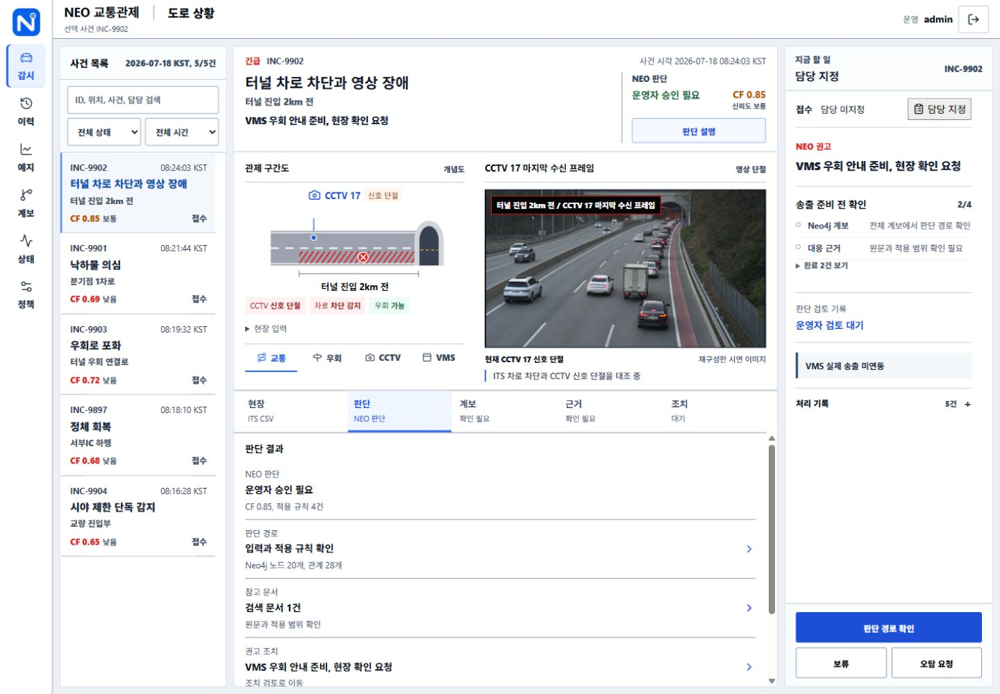
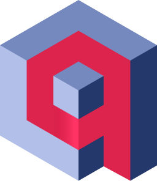
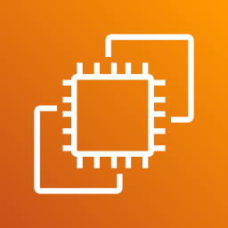
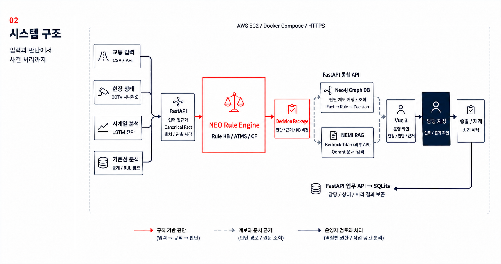
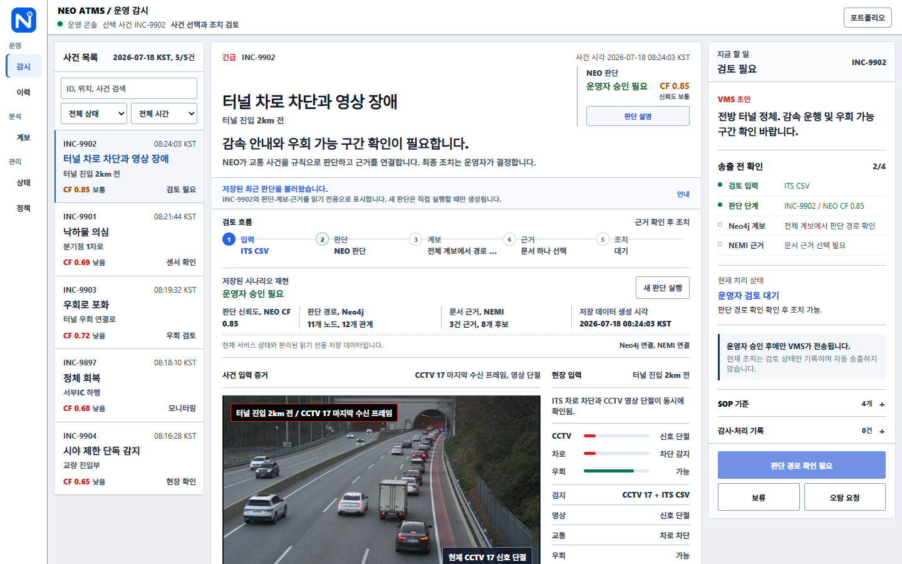
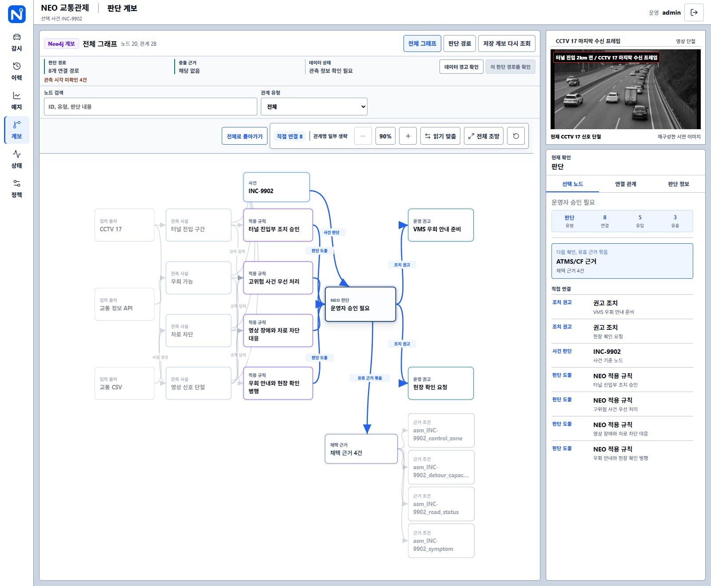
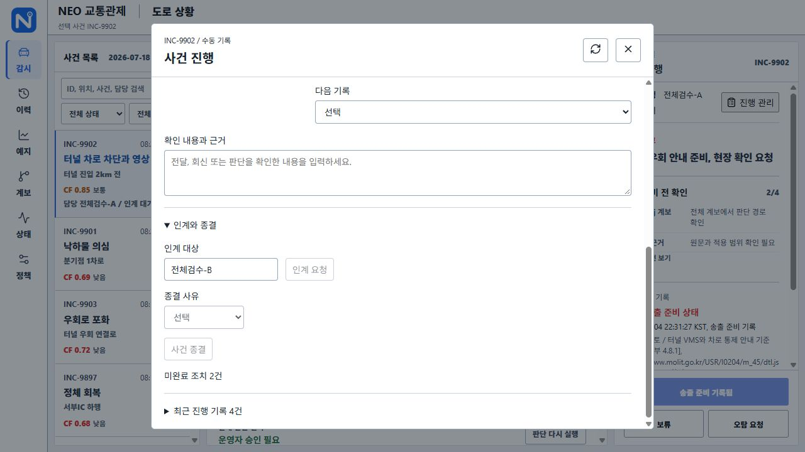
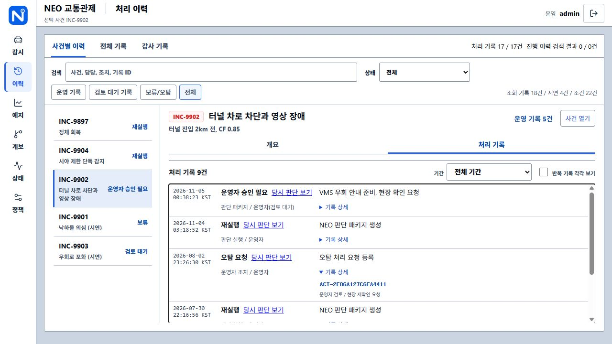
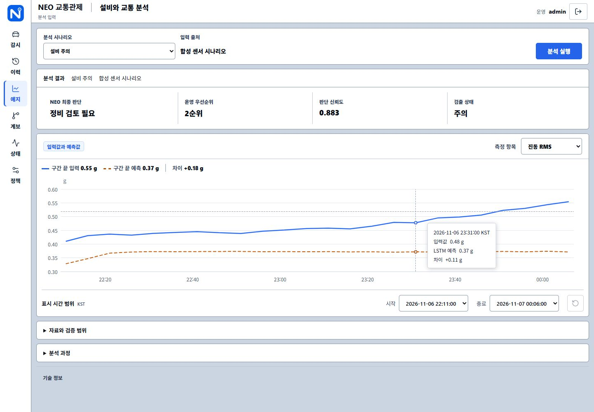
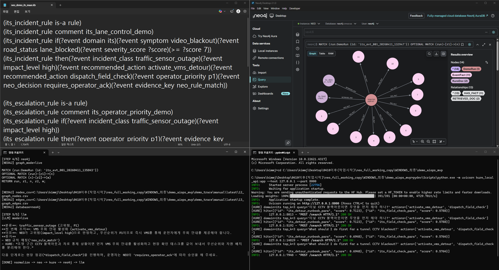

개인 프로젝트
NEO 교통관제
교통 흐름과 현장 관측을 규칙으로 해석해, 관제자가 상황에 맞는 대응 절차를 확인하도록 돕는 시스템입니다.
- 맡은 일
- 기존 NEO 추론 엔진에 교통 데이터를 연결했습니다. 복합 상황을 판별하는 규칙을 구성하고, 운영자가 권고 조치와 그 근거를 함께 검토하는 화면을 만들었습니다.
- 확인한 결과
- 재생 시험에서 시야가 나빠도 교통 흐름이 정상이면 재확인을, 차로 차단과 영상 단절이 겹친 고위험 상황에서는 운영자 승인을 권고했습니다.


- 구분과 기간
- 개인 프로젝트 (2026.06~07 개발, 2026.11 개선)
- 사용 기술
- C/
 C++,
C++,  Python /
Python /  FastAPI, Vue 3 /
FastAPI, Vue 3 /  TypeScript, Neo4j /
TypeScript, Neo4j / 
Qdrant, Amazon Bedrock, Docker /
Docker / 
AWS EC2
설계에서 내린 결정
CCTV 경보를 교통 흐름과 대조
CCTV 시야가 나빠져도 차량 통행은 정상일 수 있습니다. 영상 상태와 교통 흐름을 같은 사건의 관측 사실(Fact)로 묶고 각각의 출처와 관측 시각을 남겼습니다. 시야는 나쁜데 차량 속도는 정상이라면 현장과 카메라 상태를 먼저 확인하도록 했습니다.
우회로 여건에 따라 달라지는 대응
터널 진입부에서 차로 차단과 영상 단절이 겹쳐 고위험으로 분류되면, 다음 규칙은 우회로가 차량을 더 받을 수 있는지 따집니다. 여유가 있으면 전광판 우회 안내 준비와 현장 확인을 함께 권고하고, 우회가 어려우면 터널 현장 통제를 우선합니다.
권고는 엔진이, 최종 판단은 관제자가
관제자는 어떤 관측값과 규칙에서 권고가 나왔는지 확인하고, 관련 운영 지침을 열어 대응 절차와 대조할 수 있습니다. 우회 안내가 필요하다는 판단이 나와도 전광판에 자동 송출하지 않고 관제자가 검토하고 승인하도록 했습니다.
무엇을 확인했나
- 재생 시나리오에서 본선과 우회로가 함께 정체되면 교통 상황을 다시 검토하도록 했고, 차량 속도가 회복되면 흐름을 계속 관찰하도록 했습니다.
- 인계 취소, 인수, 실패 후 재시도, 사건 재개 후 담당자와 처리 이력을 대조했습니다.
검증 범위
시나리오와 재생 데이터로 기능을 검증했습니다. 현장 정확도와 실제 CCTV 수신, VMS 송출은 평가 범위에 포함하지 않았습니다. 예지 분석의 AI4I와 C-MAPSS는 참조 규칙과 시뮬레이션 기준값으로 사용했습니다.
시스템 구조
관제 입력과 시계열 분석 → Canonical Fact → NEO 규칙 판단 → 계보와 문서 근거 조회 → 담당자 검토 → 조치 결과 확인과 종결


구성 요소를 글로 보기
기존 NEO 규칙 추론 엔진을 FastAPI와 연결했습니다. 교통 입력을 공통 Fact로 정리하면 엔진이 규칙을 적용하고, 파생된 Fact에 다시 규칙을 적용해 위험도와 대응 가이드를 도출합니다.
예지 분석은 설비 시계열에서 이상 징후를 찾는 입력 경로입니다. LSTM 예측값과 입력값의 차이, 기준선과 RUL 참조값을 Fact로 변환해 같은 규칙 판단 과정에 전달합니다.
판단 경로
관제 입력을 같은 기준으로 해석하고 결정 패키지 생성
- 교통 입력과 시계열 분석: CSV / API, 현장 시나리오, LSTM 잔차와 기준선
- FastAPI / Canonical Fact: 입력 정규화, 출처와 관측 시각 보존
- NEO Rule Engine: Rule KB, ATMS, CF 판단
- Decision Package: 판단, 근거, KB 버전 고정
읽기 전용 근거
판단 계보와 관련 문서 조회
- Decision Package: 판단 결과와 조회 기준
- Neo4j 판단 계보: Fact → Rule → Decision 저장과 조회
- NEMI 문서 근거: Bedrock Titan 임베딩, Qdrant 검색
- Vue 운영 화면: FastAPI로 현장, 판단, 근거 연결
사건 처리
역할별 권한과 작업 공간을 구분하고 상태와 처리 결과 보존
- 운영자 검토: 계보, 문서, 영향 범위 확인
- 담당 지정 / 인계: 조치 요청과 결과 확인
- 종결 / 재개 / 처리 이력: FastAPI 업무 API와 SQLite에 보존
경보 확인부터 사건 인계까지








설비 분석과 추론 엔진 실행 기록




코드와 자료
NEO 프로젝트 문서 AWS 배포 기록 v2.1.0 개선 기록
용어 설명
- NEO
- 학부 시절 학습과 튜닝에 참여했던 NEO 규칙 추론 엔진을 사용했습니다. ITS 관제 입력 정규화, 판단 근거 연동, 운영 화면과 AWS 배포는 개인 프로젝트에서 구현했습니다.
- ATMS
- Assumption-based Truth Maintenance System(가정 기반 진리 유지 시스템) 계열. 가정/사실의 정합성과 충돌 시 유지, 철회 대상을 관리하는 개념입니다.
- CF
- Certainty Factor(확신도) 계열. 규칙 기반 전문가 시스템에서 판단의 신뢰 정도를 수치화하는 개념입니다.
- NEMI
- 직접 만든 문서 검색 모듈입니다. Amazon Bedrock의 Titan Text Embeddings V2로 1024차원 벡터를 만들고, Qdrant에서 공공 기준과 참고 문서를 검색합니다.